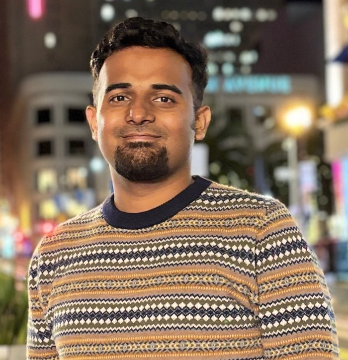
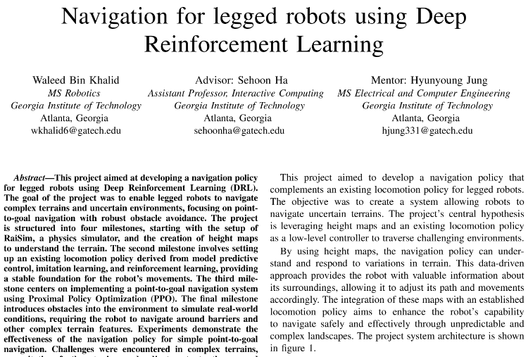
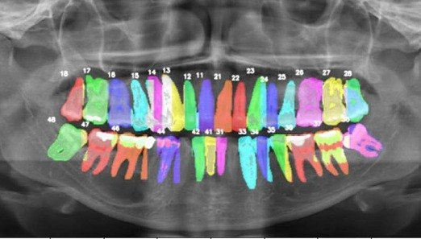
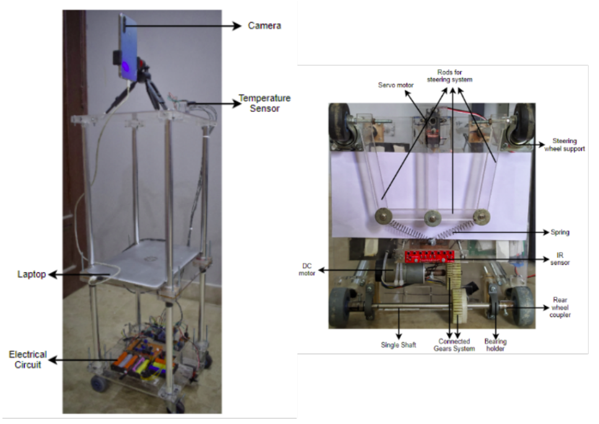

Indiana UniversityPh.D. Computer Science
SMART Lab
Georgia TechM.S. Robotics
Habib UniversityB.S. Electrical Engineering
I am a first-year Ph.D. student in Computer Science at Indiana University Bloomington, where I am a Graduate Research Assistant in the SMART Lab, advised by Prof. Byung-Cheol Min. My research focuses on intelligent multi-robot systems that can plan, collaborate, and perform complex tasks effectively, drawing on robot learning, foundation models, task and motion planning, and human–robot interaction.
I am looking for Summer 2027 research internships in robot learning, planning, and manipulation.
Current work. At the SMART Lab, I am conducting research on intelligent multi-robot systems capable of autonomous planning, collaboration, and complex task execution, leveraging robot learning, foundation models, task and motion planning, and human–robot interaction. One manuscript is currently under review; details are available on request.
Viewpoint Planning for UAV-Based Photogrammetric Inspection with Guaranteed Multi-Coverage
CVISS Lab, University of Waterloo (remote), Sep 2025 – May 2026
Manuscript in preparation
A UAV viewpoint planning method that uses voxelized scene representations, visibility modeling, and set multi-cover optimization to generate sensing-compliant candidate views, guaranteeing k-coverage of every surface voxel under photogrammetric and ground sampling distance (GSD) constraints. A global greedy multi-cover solver with rarity-weighted scoring achieves ≈100% coverage with viewpoint sets within 10–15% of optimal ILP solutions across voxel resolutions and redundancy levels, while meeting a strict GSD ≤ 0.5 mm/px.

Legged Robot Navigation in Uncertain Terrains using Deep Reinforcement Learning
Research project, Georgia Tech
A vectorized RaiSim environment and a PyTorch RL navigation policy trained on top of a low-level locomotion controller, with custom rewards for point-to-goal navigation over diverse terrains.

An AI Model for Instance Segmentation and Tooth Numbering on Orthopantomograms
International Journal of Computerized Dentistry, 2023
A U-Net and Faster R-CNN pipeline for tooth segmentation and numbering on a self-annotated OPG dataset, developed with clinicians at Aga Khan University Hospital.

Contactless Vitals Measurement Robot
International Conference on Automation, Robotics and Applications (ICARA), 2022
An Ackermann-drive robot that uses a camera, machine learning, and signal processing to measure heart rate, oxygen saturation, temperature, and blood pressure without contact. Best Capstone Project award.
More of my work, with videos, is on the Projects page.